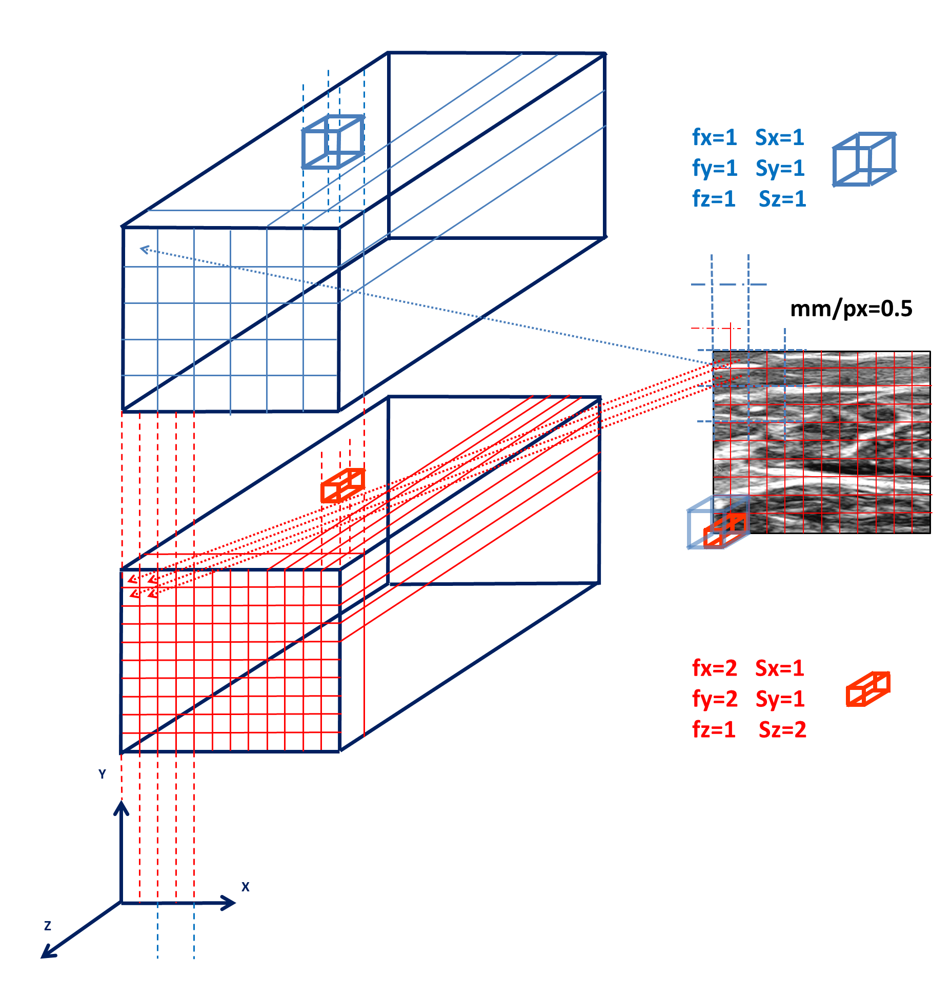

Given the size of the arrays created during data processing, it is not unlikely to meet MemoryError exceptions.
Since we have been aware about this from the beginning, we carried out the implementation on Py3DFreeHandUS always with this in mind.
You can face this problem when:
1. many US scans are performed in order to increase the accuracy of the reconstruction, and this in turn increases the size of DICOM files. So if any of this file is too big to entirely fit into memory, a MemoryError exception is raised when reading it. Here the solution would be to split into two or more smaller DICOM files the huge one (we have used MeVisLab for this). Then, increase the list as input in process.Process.setUSFiles(). Remember than only one file DICOM at a time is loaded in memory.
2. the 3D area spanned with the probe is very large, and the voxel-array initialization cannot be performed since this gets to big. To solve this, you can play with the input parameter fxyz of process.Process.initVoxelArray(). These factors simply multiply the three dimensions of the voxel-array. So, you could just decrease these values, so that the final voxel-array will be smaller. However, this will have the effect of reducing the resolution of the reconstructed morphology, since the realigned US images will be scaled as well. The image below shows this effect:
With the parameters set in the bottomost figure, each pixel of the US image is “mapped” to a voxel, whereas in first voxel-array (smaller in number of voxels and thus smaller in RAM), 4 pixels contribute to the same voxel.
3. the 3D area spanned is not big itself, but the the set of 2D US scans is diagonal with respect to to one or more axis of the global reference frame. Since by default, the voxel array is initialized as being a parallelepipedon whose axis are parallel to the global reference frame, this could lead to big voxel-array dimensions. By tuning the argument of convR in method process.Process.initVoxelArray(), it is possible to roto-translate the global reference frame. For instance, when scanning a human muscle, the scanning direction will be more ore less parallel to the muscle length. If this one is askew with respect to the global reference frame, then the described issue can occur.
4. the step (in process.Process.setUSImagesAlignmentParameters()) for creating the sequence of image scan wrappers is too big. These wrappers are created during US image alignment in 3D space with techniques described in the API. If the step, i.e the distance between two slices used to create the wrapper, is too large, then memory can get stuck. Lowering this number will increase the scans realignment time.
5. filling the gaps in the voxel-array. If the methods used for gap filling have a big memory overhead, than it is convenient to increase the number of blocks in which to subdivide the problem. Rememeber that only one block at a time will be worked and loaded in memory. By increasing blocksN in process.Process.setGapFillingParameters(), the computation time for gap filling will also increase. To keep this one as low as possible, it is suggested than to use method='VNN' as gap filling method.
{kind=link}